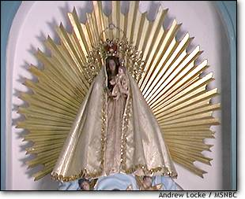

OUR LADY OF CHARITY
(Adapted from an article in the Miami Herald.)
Our Lady of Charity is a
revered symbol in Cuba
A small statue of the Virgin Mary is revered in Cuba as Our Lady
of Charity, a symbol of faith and national identity.
Our Lady of Charity has been entwined with the island's history
for nearly 400 years, ever since the statue was found floating
in the Bay of Nipe off the island's northeast coast.
The discovery is chronicled in an account set down decades
after the events happened.
|

|
|
Photo by Andrew Locke
|
Between 1606 and 1612, two Indian brothers -- Juan and Rodrigo
de Hoyos -- set out with the 10-year-old African slave Juan Moreno
to collect sea salt for the Spanish colony's booming copper-mining
settlement of El Cobre. Crossing the bay in a small craft, the
three spied an object -- ``a white thing floating on the foam.''
When they drew near, they found it was a statue of the Virgin
Mary, about a foot high, carrying the infant Jesus on her left
arm and a gold crucifix in her right hand. The statue was attached
to a plank inscribed: `Yo soy la Virgen de la Caridad [I am the
Virgin of Charity].''
They carried the statue to El Cobre, where it became an object
of veneration whose image spread throughout the island, often
shown rising above a stormy sea before the gaze of three awestruck
voyagers in a tiny boat.
Our Lady of Charity was declared Cuba's patron saint by Pope
Benedict XV in 1916. The saint's day is celebrated Sept. 8.
Known familiarly as Cachita, Our Lady of Charity is special
not only to Cuba's Roman Catholics but to followers of Santeria,
who worship her as the Yoruba goddess Ochun.